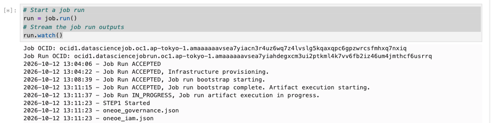
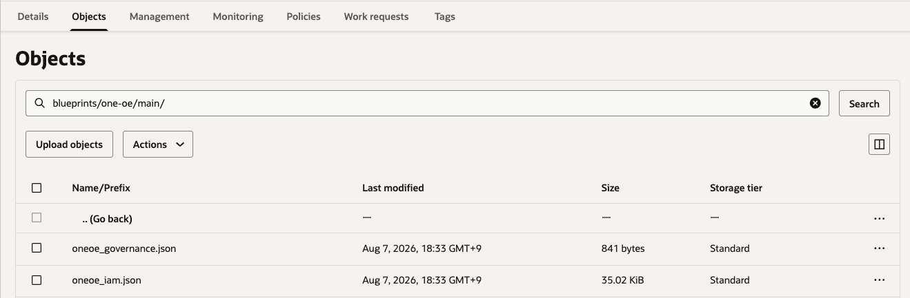

OCI Data Science Job에서 Cross-Tenancy Object Storage 마운트하기
OCI Data Science에서 Job을 생성할 때 Object Storage를 마운트할 수 있습니다. OCI 콘솔에서는 같은 테넌시 내의 Object Storage Bucket만을 검색하여 마운트합니다. 여기서는 다른 테넌시에 있는 Bucket을 마운트하는 방법을 알아봅니다.
Oracle Accelerated Data Science (ADS)와 타 테넌시 자원 접근을 위한 Cross-Tenancy Access Policies을 이용하여, 주피터 노트북에서 파이썬으로 Job을 생성해야 합니다.
단, 다른 테넌시의 Bucket도 Data Science Job이 실행되는 리전과 같은 리전에 있어야 합니다.
Data Science Job이 실행되는 테넌시 설정
-
Dynamic Group을 생성합니다.
-
Identity Domain:
Default -
Name:
ds-job-runs-dg -
Rule:
ALL {resource.type = 'datasciencejobrun', resource.compartment.id = '<JOB_RUN_COMPARTMENT_OCID>'} -
Rule: Cross-Tenancy 접근 정책이 잘 동작하는지 테스트하기 위해 Compute VM을 생성하고, 해당 VM의 OCID를 추가합니다.
ALL {instance.id = 'ocid1.instance.oc1....'}
-
-
생성한 Dynamic Group의 OCID를 확인합니다.
<DYNAMIC_GROUP_OCID_IN_DSJOB_TENANCY>항목으로 사용
-
Data Science Job을 노트북을 통해 생성하는 OCI IAM User가 속한 Group의 이름과 OCID를 확인합니다.
- Name: 예,
data-science-group <GROUP_OCID_IN_DSJOB_TENANCY>항목으로 사용
- Name: 예,
-
Data Science Job을 실행하는 테넌시의 OCID를 확인합니다.
<DSJOB_TENANCY_OCID>항목으로 사용
-
Bucket이 있는 테넌시의 OCID를 확인합니다.
<BUCKET_TENANCY_OCID>항목으로 사용
-
Cross-Tenancy 접근을 위한 Policy는 Endorse 구문으로 인해 root compartment에 생성합니다.
-
Name:
pcy-ds-job-endorse-cross-tenancy-os-read -
Statements
Define tenancy BucketTenancy as <BUCKET_TENANCY_OCID> Endorse dynamic-group 'Default'/'ds-job-runs-dg' to read object-family in tenancy BucketTenancy Endorse group 'Default'/'data-science-group' to read object-family in tenancy BucketTenancy -
테스트용 Compute VM이 속한 Dynamic Group에 현재 테넌시의 Object Storage 읽기 권한을 부여합니다.
allow dynamic-group 'Default'/'ds-job-runs-dg' to read object-family in tenancy
-
Bucket이 있는 테넌시 설정
-
Cross-Tenancy 접근을 허용하기 위한 Policy는 Admit 구문으로 인해 root compartment에 생성합니다.
-
Name:
pcy-os-admit-cross-tenancy-ds-job-read -
Statements
Define tenancy DSJobTenancy as <DSJOB_TENANCY_OCID> Define dynamic-group DSJobRuns as <DYNAMIC_GROUP_OCID_IN_DSJOB_TENANCY> Define group DSJobGroup as <GROUP_OCID_IN_DSJOB_TENANCY> Admit dynamic-group DSJobRuns of tenancy DSJobTenancy to read object-family in tenancy Admit group DSJobGroup of tenancy DSJobTenancy to read object-family in tenancy
-
Compute VM에서 Cross-Tenancy 테스트
Policy가 잘 적용되었는지 테스트해 봅니다.
-
Compute VM에 SSH로 접속합니다.
-
OCI CLI를 설치합니다. Oracle Linux 8, 9 기준
sudo dnf install python39-oci-cli -
현재 테넌시 내의 Bucket 목록이 조회되는지 확인합니다.
oci os ns get --auth instance_principal oci os bucket list --auth instance_principal --namespace <current_namespace> --compartment-id <DSJOB_TENANCY_OCID> -
대상 테넌시 내의 Bucket 목록이 조회되는지 확인합니다.
oci os ns get --auth instance_principal --compartment-id <BUCKET_TENANCY_OCID> oci os bucket list --auth instance_principal --namespace <namespace> --compartment-id <BUCKET_TENANCY_OCID> -
대상 Bucket의 오브젝트가 조회되는지 확인합니다.
oci os object list --auth instance_principal --bucket-name <bucket-name> --namespace <namespace> -
모두 잘 조회된다면, Cross-Tenancy 접근 Policy가 잘 적용된 것입니다.
Notebook 세션에서 Job 생성하기
-
Data Science에서 노트북 세션을 실행합니다.
-
ADS의 Define a Job 예시처럼, DataScienceJob 객체의 with_storage_mount() 메서드로 마운트할 스토리지를 지정하고, 이 객체를 Job.with_infrastructure()에 전달합니다. with_storage_mount()에서 Object Storage 마운트를 지원합니다.
<namespace>: Bucket이 있는 테넌시의 namespace를 사용- Cloud Shell에서
oci os ns get명령으로 확인하거나, OCI 콘솔에서 테넌시 상세 정보에서Object storage namespace로 확인
- Cloud Shell에서
<bucket_name>: 대상 테넌시내의 Bucket 이름<prefix>: 필터링한 Object의 prefix 지정dest에 경로를 지정하면, 설명과 같이/mnt/<destination_directory_name>에 마운트됩니다.
from ads.jobs import Job, DataScienceJob, PythonRuntime, GitPythonRuntime job = ( Job(name="My Job") .with_infrastructure( DataScienceJob() ... .with_storage_mount( { "src" : "oci://<bucket_name>@<namespace>/<prefix>", "dest" : "<destination_directory_name>" } # mount oci object storage to path "/mnt/<destination_directory_name>" ) ) .with_runtime( ... ) ) -
실행 코드를 작성합니다.
-
step1_python.py- 실행할 예시 코드입니다. 마운트된 Bucket 내의 파일 목록을 조회합니다.import os print("STEP1 Started") from pathlib import Path folder = Path("/mnt/test-oci-bucket") try: for path in sorted(folder.iterdir()): if path.is_file(): print(path.name) except FileNotFoundError: print(f"Directory does not exist: {folder}") except NotADirectoryError: print(f"Path is not a directory: {folder}") except PermissionError: print(f"Permission denied when accessing directory: {folder}") except OSError as e: print(f"Error listing files: {e}") -
노트북 세션에서 실행한 코드 예시
from ads.jobs import Job, DataScienceJob, GitPythonRuntime log_group_id = "ocid1.loggroup.oc1...." job = ( Job(name="My Job - GitPythonRuntime & Cross-Tenancy Bucket Access") .with_infrastructure( DataScienceJob() .with_log_group_id(log_group_id) .with_shape_name("VM.Standard.E4.Flex") .with_shape_config_details(ocpus=1, memory_in_gbs=16) .with_block_storage_size(50) .with_storage_mount( { "src" : "oci://my-bucket@axzu9ntxxxxx/blueprints/one-oe/main/", "dest" : "test-oci-bucket" } # mount oci object storage to path "/mnt/<destination_directory_name>" ) ) .with_runtime( GitPythonRuntime(skip_metadata_update=True) .with_service_conda("pytorch110_p38_cpu_v1") .with_source("https://github.com/<GIT_USER>/osdc-test.git") .with_entrypoint("step1_python.py") ) ) # Create the job on OCI Data Science job.create() # Start a job run run = job.run() # Stream the job run outputs run.watch()
-
-
실행이 완료되고 그 로그를 확인해 보면, 잘 마운트되었고,
step1_python.py에서 파일 목록이 조회된 것을 볼 수 있습니다.
-
OCI 콘솔에서 확인한 대상 Bucket 내 오브젝트

이 글은 개인으로서, 개인의 시간을 할애하여 작성된 글입니다. 글의 내용에 오류가 있을 수 있으며, 글 속의 의견은 개인적인 의견입니다.